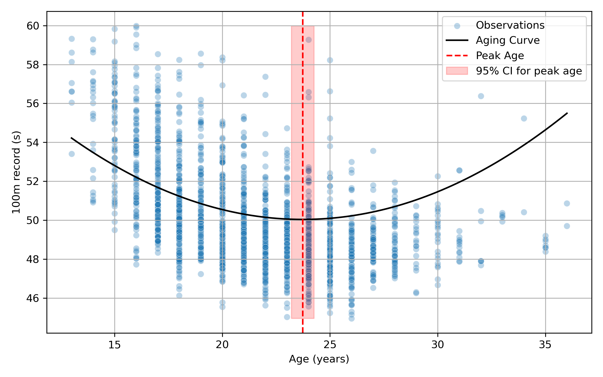
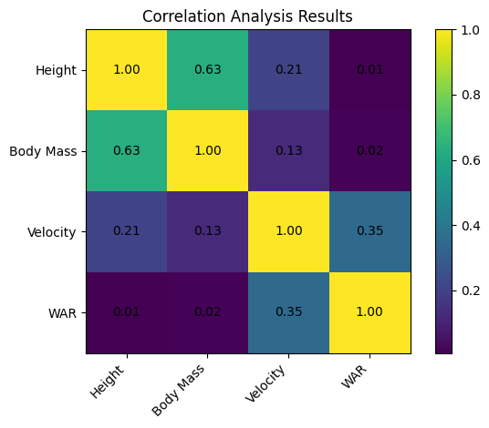

Statistical Machine Learning for Longitudinal Biomedical Data
Hello, my name is Yuntae Ju. My research lies at the intersection of statistical machine learning, physiological data analysis, and biomedical data science. I develop interpretable and well-validated modeling frameworks for longitudinal and hierarchical data, with particular interest in abnormal pattern detection in complex biological and behavioral systems.
My research trajectory began in exercise physiology and anti-doping science. In the course of this work, I became interested in biochemical and physiological measurements, especially metabolite profiling using LC–MS and GC–MS, as well as physiological signals such as EEG. Working with these data made me increasingly interested in how biological signals evolve over time, how normal adaptation differs from atypical deviation, and how such patterns can be modeled more rigorously.
This background led me toward machine learning and statistical modeling for repeated-measures data. I am particularly interested in longitudinal prediction, hierarchical and mixed-effects modeling, anomaly detection, and uncertainty-aware inference. A central emphasis of my work is on combining flexible machine learning methods with statistically principled validation strategies, including grouped cross-validation, resampling-based inference, and interpretable model evaluation.
Much of my applied research uses athlete monitoring and anti-doping datasets as a testbed for methodological development. In this setting, I study performance trajectories, physiological variability, and abnormal deviations using integrated machine learning and longitudinal statistical frameworks. While my empirical work has often originated in sport and human performance, my broader interests extend to biomedical signal modeling, population health monitoring, and high-stakes decision systems.
My long-term goal is to develop statistically rigorous and interpretable computational frameworks for complex biomedical data, especially systems characterized by temporal dependence, heterogeneous populations, and repeated observations. I am particularly motivated by problems where reliable pattern detection matters, and where it is essential to distinguish predictive modeling from causal inference.

